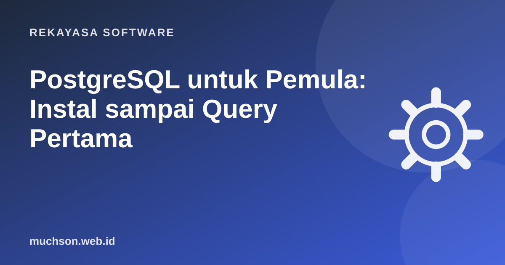

Beranda › Artikel › Rekayasa Software
Rekayasa SoftwarePostgreSQL untuk Pemula: Instal sampai Query Pertama
PostgreSQL adalah database relasional open source yang sudah dikembangkan lebih dari 35 tahun. Dalam Stack Overflow Developer Survey 2025, PostgreSQL menjadi database yang paling banyak dipakai responden, sekitar 55%. Kalau Anda hanya sempat belajar satu database, ini pilihan yang aman.

Kenapa PostgreSQL?
- Gratis dan terbuka, tanpa lisensi berbayar untuk fitur inti.
- Patuh standar SQL dan transaksi yang andal (ACID).
- Tipe data kaya: JSONB, array, rentang waktu, UUID, hingga data geografis lewat PostGIS.
- Ekstensi: pgvector untuk pencarian AI, pg_trgm untuk pencarian teks mirip.
- Didukung di mana-mana: Supabase, Neon, AWS RDS, Google Cloud SQL, Railway.
Cara tercepat menjalankannya
Perintah psql yang sering dipakai
| Perintah | Fungsi |
|---|---|
\l | Daftar database |
\c tokodb | Pindah ke database tokodb |
\dt | Daftar tabel |
\d produk | Struktur tabel produk |
\x | Tampilan hasil vertikal (enak untuk baris lebar) |
\q | Keluar |
Membuat database dan tabel pertama
CREATE DATABASE tokodb;
\c tokodb
CREATE TABLE produk (
id BIGINT GENERATED ALWAYS AS IDENTITY PRIMARY KEY,
nama TEXT NOT NULL,
harga INTEGER NOT NULL CHECK (harga >= 0), -- rupiah, bilangan bulat
stok INTEGER NOT NULL DEFAULT 0,
atribut JSONB,
dibuat_pada TIMESTAMPTZ NOT NULL DEFAULT now()
);
INSERT INTO produk (nama, harga, stok, atribut) VALUES
('Frame Titanium', 450000, 12, '{"warna": "hitam"}'),
('Lensa Blue Light', 300000, 40, '{"indeks": 1.56}'),
('Kain Microfiber', 15000, 200, NULL);
SELECT nama, harga FROM produk WHERE harga < 400000 ORDER BY harga;Tipe data yang perlu Anda kenal
Mencari di dalam JSONB
SELECT nama FROM produk WHERE atribut->>'warna' = 'hitam';
-- index agar pencarian JSONB cepat
CREATE INDEX idx_produk_atribut ON produk USING GIN (atribut);Menghubungkan dari kode
// Node.js dengan pg
import pg from 'pg';
const pool = new pg.Pool({ connectionString: process.env.DATABASE_URL });
const { rows } = await pool.query(
'SELECT nama, harga FROM produk WHERE harga < $1', [400000]
);Pakai parameter
Selalu kirim nilai lewat parameter ($1, $2) seperti contoh di atas, bukan menggabungkan string. Ini mencegah SQL injection.
Tanya jawab
PostgreSQL atau MySQL untuk pemula?
Keduanya bagus. PostgreSQL unggul pada fitur lanjutan dan kepatuhan standar; MySQL sangat umum di hosting murah. Konsep SQL-nya hampir sama.
Apakah PostgreSQL cocok untuk Laravel?
Ya. Laravel mendukung PostgreSQL bawaan; cukup ubah DB_CONNECTION=pgsql di file .env.
Aplikasi GUI apa yang enak dipakai?
pgAdmin (resmi), DBeaver (gratis, multi-database), atau TablePlus.
Sumber dan bacaan lanjut
- PostgreSQL Tutorial (dokumentasi resmi)
- PostgreSQL: Data Types
- Stack Overflow Developer Survey 2025: Technology